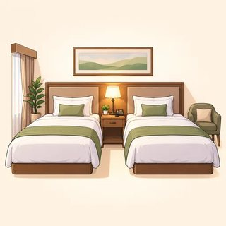
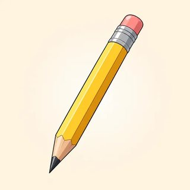

IELTS Academic Preparation · Instructor Kit
Module 2
Listening & Reading
Hear it coming. Find it fast. Prove it.
- 2.1 Listening: predict, signposts, take the correction, spell it exactly
- 2.2 Reading: skim, scan, paraphrase, beat the clock
- 2.3 True / False / Not Given & matching: prove every answer
- C8 Practice Test 1 under exam conditions
2.1 · Lead-in · you will hear this once
"The meeting's on Tuesday — oh, no, sorry, they moved it to Thursday."
When's the meeting? (Thursday.) Is "Tuesday" in the recording? (Yes.) Is it the answer? (No.) Can you ask the speaker to repeat it? (No: once only.)
TODAY not better ears · better habits
2.1 · The test · 4 parts · 40 questions · about 30 minutes
Easy → hard, social → academic
| Part | Who | What | Often |
|---|---|---|---|
| 1 | 2 speakers | everyday conversation | a form: names, numbers, dates |
| 2 | 1 speaker | everyday talk | a map or plan, a tour |
| 3 | 2–4 speakers | students + tutor | multiple choice, matching |
| 4 | 1 speaker | a lecture | note completion · no break |
ONCE every recording plays one time only · missed it? let it go · catch the next one
2.1 · Habit 1 · read ahead and predict
Where are they? What will the form ask?

booking a room

reserving a table

train tickets

enrolling in a course
Enrolling in a course: what will they ask for? (name · phone · course · start date · fee · room) Do you know the answers yet? (No, but you know what kind.)
2.1 · Predict the answer type · before the audio starts
What kind of word fits?
| The tour leaves from the main ________ at 9:30. | place (noun) |
| The library closes at ________ on weekdays. | time |
| Bring two forms of ________ to register. | plural / uncountable noun |
| Fee for city residents: $ ________ | number ($ already printed!) |
| Please bring spare ________. | plural noun |
"The library closes at ___ on weekdays." Could it be "Monday"? (No: "weekdays" is already there.) Do you predict the exact word? (No: the type.)
2.1 · Habits 2 and 3 · signposts and corrections
The answer is coming. The answer is changing.
COMING
- Let's move on to…
- The main problem was…
- What you need to remember is…
- I'd recommend…
CHANGING
- actually… (= in fact, not "currently")
- sorry, I mean… · no, wait…
- on second thought… · or rather…
- it's not X, it's Y
"Room fourteen — actually, sorry, it's Room forty." Which room? (40.) What does actually mean here? (The truth is… / a correction.) Which one do you write? (The final one.)
2.1 · Protect the mark · heard it right, write it right
Numbers, letters, plurals, limits
| -teen / -ty | thirTEEN · THIRty · fifTEEN · FIFty |
|---|---|
| Phone | "oh-seven-seven-double-oh" = 07700 |
| Letters | A /eɪ/ · E /iː/ · I /aɪ/ · G /dʒiː/ · J /dʒeɪ/ · "double R" = RR |
| Dates | "the nineteenth of March" → 19 March or March 19 |
| Plurals | battery ≠ batteries → one wrong letter = 0 |
| Limit | NO MORE THAN TWO WORDS → "student identification cards" = 0 |
OK CAPITAL LETTERS · British or American spelling
2.1 · Plans and maps · fix where you are standing first
The Student Center, ground floor
- on your left / right
- opposite · next to
- halfway along · beyond
- at the far end · in the far corner
- in the middle
Where are you standing? (At the entrance, at the bottom.) You walk in: is A on your left? (Yes.) Will every letter be an answer? (No: two are extra.)
2.1 · Model · then your turn: Build the trap · 12 min
A Part 1 call
Clerk: City Bikes, good morning. How can I help?
Caller: I'd like to rent two bikes for Saturday. The surname's Nguyen: N-G-U-Y-E-N.
Clerk: Is that for the morning or the whole day?
Caller: Just the morning. Oh, actually, could we make it the whole day?
Clerk: Sure. We open at eight thirty on weekdays, but on Saturdays at nine.
Caller: your real name and number? (No: the card's.) What must you include? (A correction.)
Receptionist: can you see the card? (No.) What do you do at the end? (Read the form back.)
When do you swap? (After the check.)
Receptionist: can you see the card? (No.) What do you do at the end? (Read the form back.)
When do you swap? (After the check.)
2.2 · Lead-in · the Reading clock
60 minutes · 3 passages · 40 questions · no transfer time
| Passage 1 | easiest | ≈ 17 min |
|---|---|---|
| Passage 2 | harder | ≈ 20 min |
| Passage 3 | hardest | ≈ 23 min |
"No transfer time": what does it mean for you? (Write each answer on the answer sheet as soon as you find it.) Is there a penalty for a wrong answer? (No: never leave a blank.)
RULE at minute 20 and minute 40, move on, whatever happens
2.2 · Two reading modes
Skim to map. Scan to find.
| SKIM | SCAN | |
|---|---|---|
| Goal | gist + structure | one piece of information |
| Eyes | glide over everything | jump to a target |
| Read closely | title · first + last sentences · signposts | only around the keyword |
| When | first, 2–3 minutes | for each question |
"I'm looking for the year 2011." Skim or scan? (Scan.) "Which paragraph gives a warning?" (Skim, then scan for "critics warn".) Read everything carefully first? (No!)
2.2 · Keyword → paraphrase · the master skill
The answer is almost never in the question's words
| Question | Kowalski's study suggests walkers consider comfort and ______ as well as time. |
|---|---|
| Keyword | Kowalski (a name can't be paraphrased) → paragraph B |
| Text | …suggesting that walkers weigh comfort and perceived safety alongside time. |
| Answer | perceived safety (two words, copied exactly) |
Option: "appear mainly on university campuses." The text says "a study of three university campuses." Same words, same meaning? (No: the word-match trap.)
2.2 · A strategy for every question type
In order first. Any order last.
| In passage order | Strategy |
|---|---|
| completion | predict word class · limit |
| multiple choice | read all options · eliminate |
| short answer | words from the passage |
| True / False / NG | confirm · clash · silent |
| Any order · do last | Strategy |
|---|---|
| matching information | distinctive keyword · scan all |
| matching features | underline every name |
| matching headings | main idea, not detail |
TIMED Questions 8–13 · 7 minutes · alone · answers straight onto the page
2.3 · The core rule
Confirm. Clash. Silent.
| TRUE (YES) | the text confirms it |
|---|---|
| FALSE (NO) | the text contradicts it: both can't be true |
| NOT GIVEN | the text is silent |
Can I point to the words that clash? Yes → False. No → Not Given.
"The museum opened in 1980." → "It was the first of its kind." Clash? (No.) So? (Not Given.)
"I know it's true in real life." Evidence? (No: only the text counts.)
"The museum opened in 1980." → "It was the first of its kind." Clash? (No.) So? (Not Given.)
"I know it's true in real life." Evidence? (No: only the text counts.)
ZERO "True" on a Yes / No / Not Given task · write the labels the instructions use
2.3 · Prove it · every answer, every time
Locate → Underline → Label → Defend
| TRUE | the paraphrase pair | "main prey" = "main food source" |
|---|---|---|
| FALSE | quote the clash | "three years" vs "more than three years" |
| NOT GIVEN | name the missing piece | "The text talks about the number of learners, but not their gender." |
Strong (easy to over-claim): all · every · never · only · the most · proves
Limited (careful texts): some · a few · often · tends to · may · suggests
2.3 · Matching headings · then Prove it debates · 10 min
The main idea, not the detail
- Name the paragraph's main idea in five words
- Easy ones first · cross off used headings
- More headings than paragraphs: extras are traps
- A heading that fits one sentence = the detail trap
Debates: do you choose your side? (No: the card gives it.) Can you say "I know"? (No: point to the text.) How long each? (30 seconds.) When do you check the answer strip? (After we agree.)
SAY The text says X, whereas the statement says Y. · There's no mention of… · "Only" makes it false.
C8 · Practice Test 1 · Listening + Reading
A map, not a verdict
- Listening ≈ 30 min · once only · 2 min to check
- Reading · answers straight on the sheet
- Phones off and away · pencil · CAPITALS are fine
- No talking · no dictionaries · no blanks

pencil

water
Missed an answer? (Let it go: catch the next one.) Heart racing? (Pencil down, breathe out slowly, carry on.) Who sees your score? (Only you, and me.)
You can now hear it coming, find it fast and prove it
Module 2 done
- Listening: predict the type · take the correction · spell it exactly · never freeze
- Reading: skim to map · scan for the paraphrase · 20 minutes a passage · no blanks
- Tricky types: confirm, clash or silent · the main idea, not the detail
Homework: online lessons 2.1–2.3 with 🔊. After Practice Test 1: your two leaks. Next: Module 3, Academic Writing.